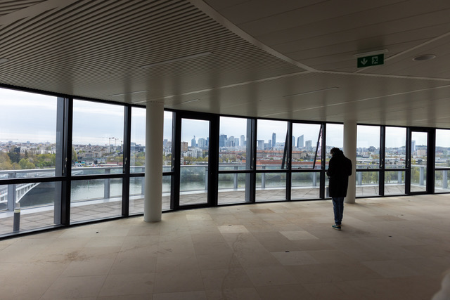
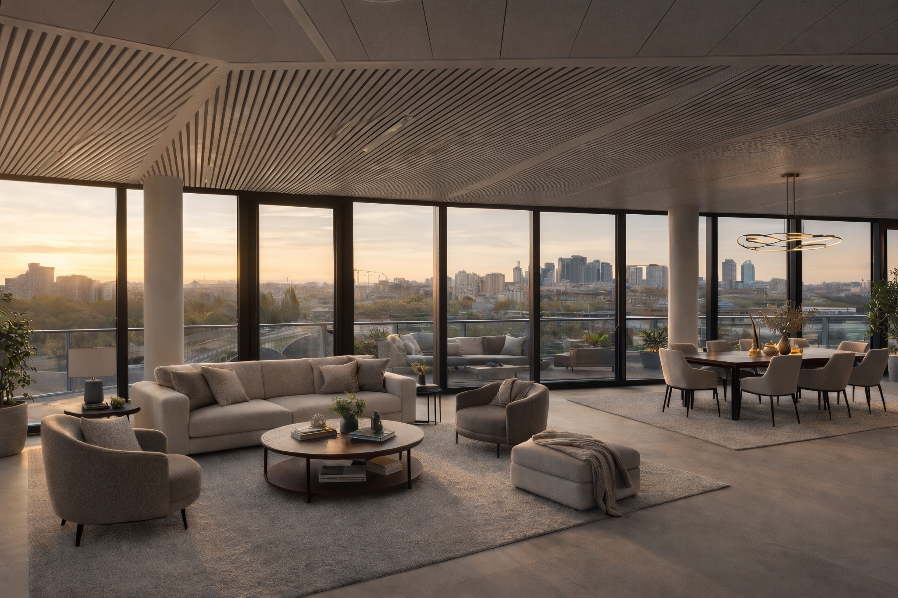
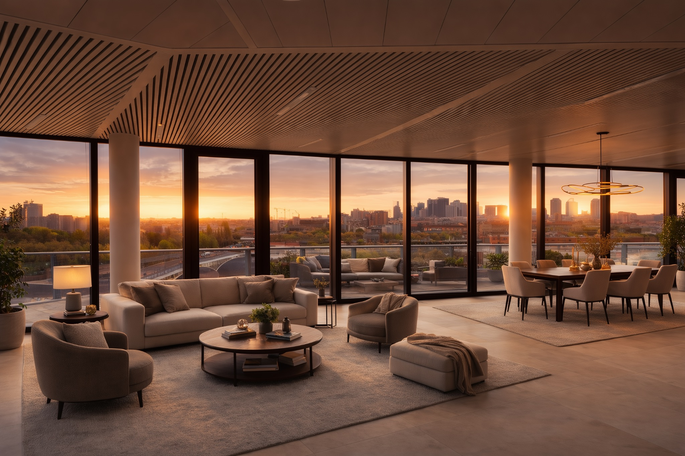
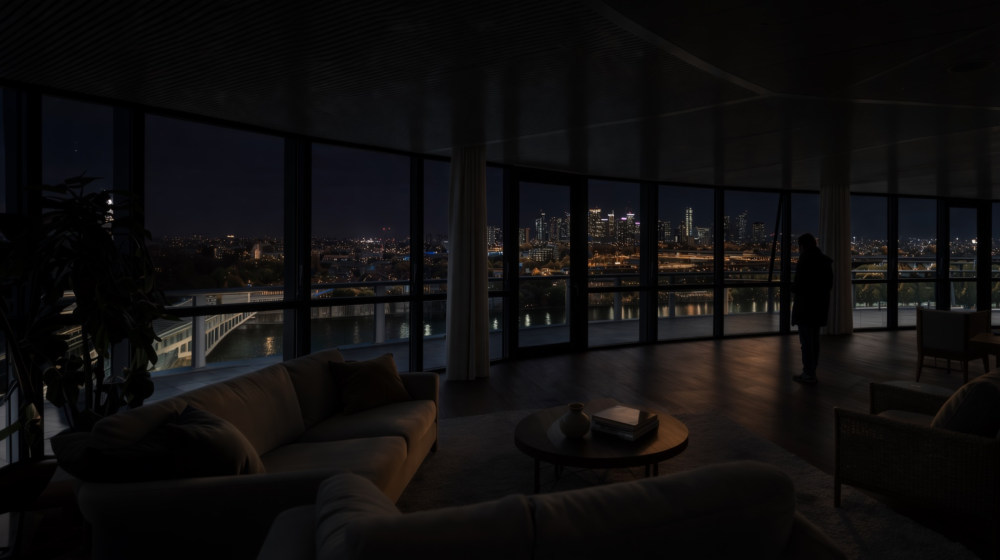

Time-lapse and location validation
Location potential / Défense apartment with a view

01 / Method
Scouting images → time-lapse proposal → location decision
A short visual preparation path connecting intent, production reality and a clear image reference.
Dawn / Early light

Sunset / Cinematic atmosphere

Night / Production reference
Existing time-lapse reference
VALIDATED TIME-LAPSE PROPOSAL
Validated by direction, cinematography and production.
For production
Faster decisions before committing resources.
Location potential, time-of-day options and feasibility are clarified before the shoot.
For the director
A clear visual direction before arriving on set.
Mood, atmosphere and narrative intention become concrete and shareable.
For the cinematographer
A bridge between scouting and lighting strategy.
Light direction, contrast and atmosphere can be explored before production begins.
VFX alignment
A visual direction for VFX and live-action integration, validated during prep.
Atmosphere, light, time-of-day, reflections and exterior extension logic are explored before the shoot, giving production, direction, cinematography and VFX a shared reference.
Production gain
Less uncertainty. Better alignment. Faster decisions.
Visual preparation turns scouting material into a shared reference for production, direction, cinematography and VFX.